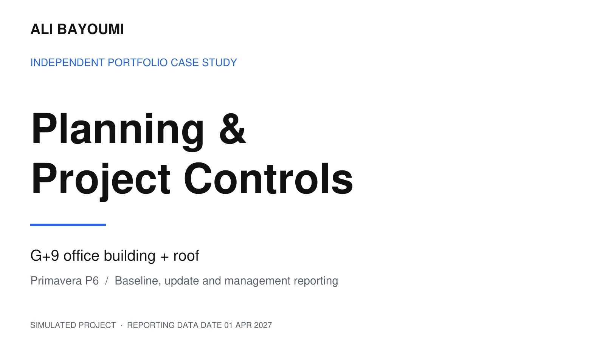

PROJECT 01 / INDEPENDENT CASE STUDY
Planning & Project ControlsPrimavera P6 Case Study
An integrated building programme from engineering and procurement through construction and handover. A detailed P6 baseline and update, supported by resource planning, earned value analysis and management reporting.
Explore the case study